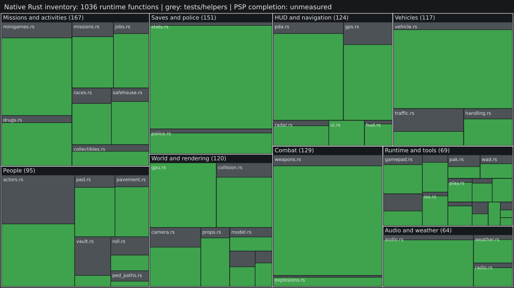

Green counts runtime function definitions in src/**/*.rs; grey counts test and test-helper definitions. Area represents function count, not original binary size. No C++ code or Android routine totals enter these measurements. These source counts do not prove gameplay fidelity or a percentage of the PSP game completed. Related class names are research navigation hints, not verified routine matches.

| Subsystem | Modules | Runtime functions | Test/helper functions |
|---|---|---|---|
| Missions and activities | 7 | 167 | 42 |
| Saves and police | 2 | 151 | 9 |
| Combat | 2 | 129 | 14 |
| HUD and navigation | 5 | 124 | 23 |
| Vehicles | 3 | 117 | 30 |
| World and rendering | 7 | 114 | 29 |
| People | 6 | 95 | 70 |
| Runtime and tools | 14 | 69 | 27 |
| Audio and weather | 3 | 64 | 9 |
Raw data: progress.json. Local validation: 227 tests passed, zero compiler warnings (2026-10-28).